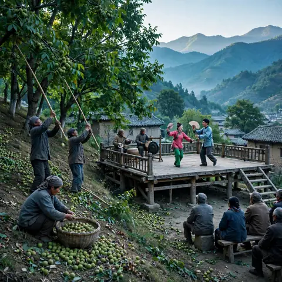
十大雅集 / 粉墨春秋
IV
粉墨春秋
传统戏剧
收录国家级代表性项目 171 项、473 子项，申报地区涉及 32 个省级行政区，另有中直单位申报的 2 子项、新疆生产建设兵团申报的 1 子项。子项最多的地区：山西省（38）、河北省（36）、山东省（33）。
项目档案库
171 项、473 子项
（本页配图如无特别标注，均为 AI 生成的示意图，非实拍。）
第 2 / 3 页（IV-61 至 IV-120）
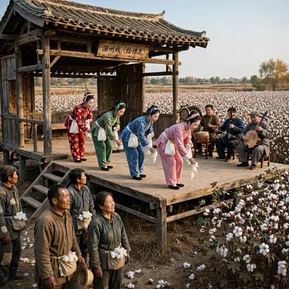
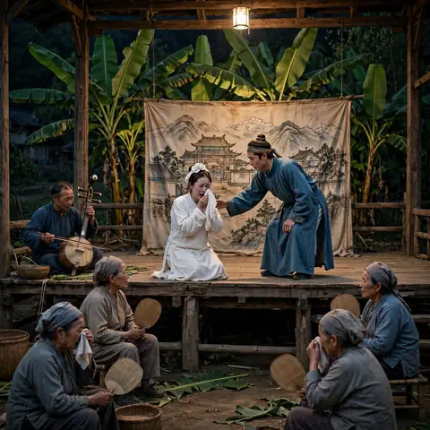
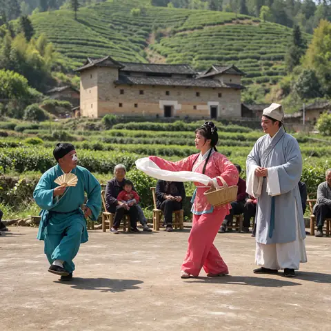
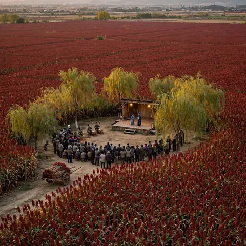
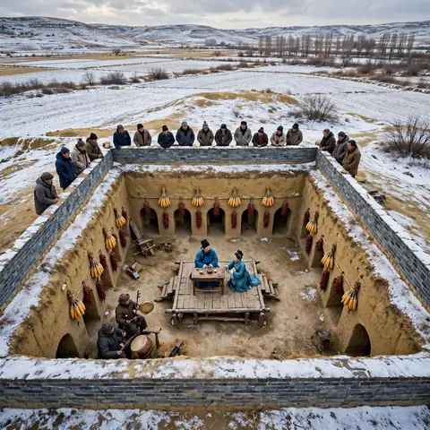
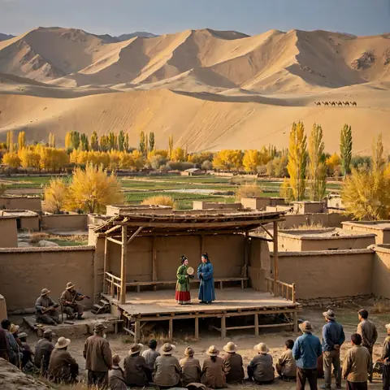
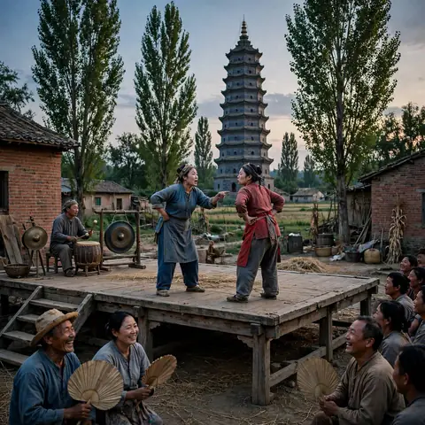
IV-7012 项子项目秧歌戏
河北省 · 山西省
展开档案明细12 条
- 秧歌戏（隆尧秧歌戏）河北省隆尧县2006 第一批 · 新增项目官方页 →
- 秧歌戏（定州秧歌戏）河北省定州市2006 第一批 · 新增项目官方页 →
- 秧歌戏（朔州秧歌戏）山西省朔州市2006 第一批 · 新增项目官方页 →
- 秧歌戏（繁峙秧歌戏）山西省繁峙县2006 第一批 · 新增项目官方页 →
- 秧歌戏（蔚县秧歌）河北省蔚县2008 第二批 · 扩展项目官方页 →
- 秧歌戏（祁太秧歌）山西省祁县2008 第二批 · 扩展项目官方页 →
- 秧歌戏（祁太秧歌）山西省太谷县2008 第二批 · 扩展项目官方页 →
- 秧歌戏（襄武秧歌）山西省襄垣县2008 第二批 · 扩展项目官方页 →
- 秧歌戏（襄武秧歌）山西省武乡县2008 第二批 · 扩展项目官方页 →
- 秧歌戏（壶关秧歌）山西省壶关县2008 第二批 · 扩展项目官方页 →
- 秧歌戏（泽州秧歌）山西省泽州县2011 第三批 · 扩展项目官方页 →
- 秧歌戏（沁源秧歌）山西省长治市沁源县2021 第五批 · 扩展项目官方页 →
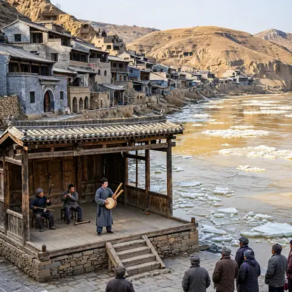
IV-719 项子项目道情戏
山西省 · 河南省 · 山东省 等 5 地
展开档案明细9 条
- 道情戏（晋北道情戏）山西省右玉县2006 第一批 · 新增项目官方页 →
- 道情戏（临县道情戏）山西省临县2006 第一批 · 新增项目官方页 →
- 道情戏（太康道情戏）河南省太康县2006 第一批 · 新增项目官方页 →
- 道情戏（蓝关戏）山东省莱州市2006 第一批 · 新增项目官方页 →
- 道情戏（陇剧）甘肃省2006 第一批 · 新增项目官方页 →
- 道情戏（洪洞道情）山西省洪洞县2008 第二批 · 扩展项目官方页 →
- 道情戏（沾化渔鼓戏）山东省沾化县2008 第二批 · 扩展项目官方页 →
- 道情戏（神池道情戏）山西省神池县2011 第三批 · 扩展项目官方页 →
- 道情戏（商洛道情戏）陕西省商洛市2011 第三批 · 扩展项目官方页 →
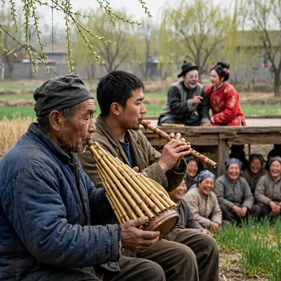
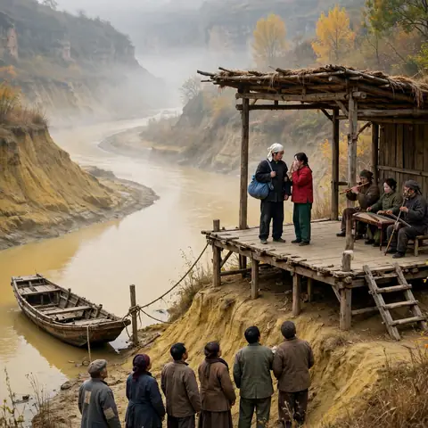
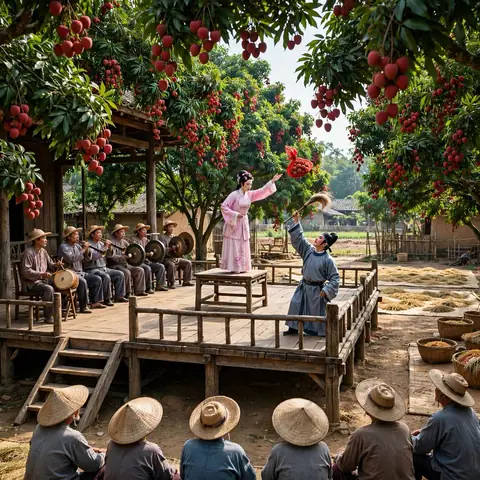
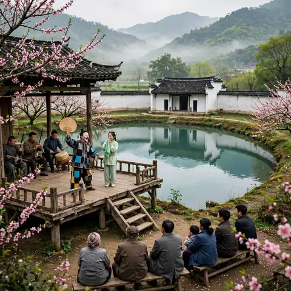
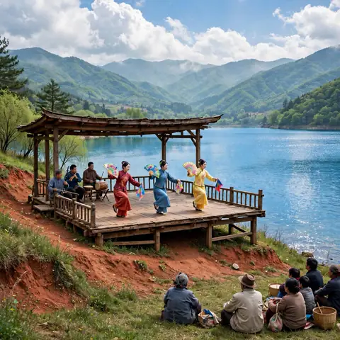
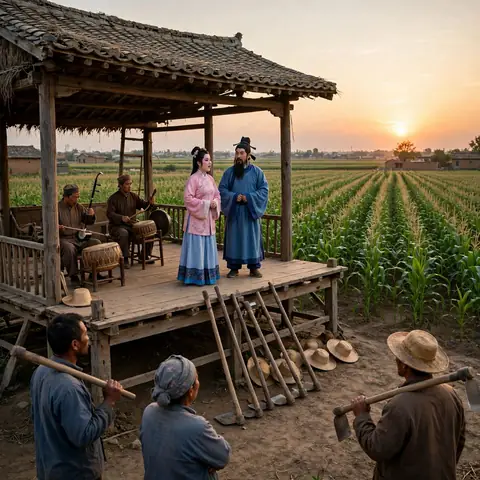
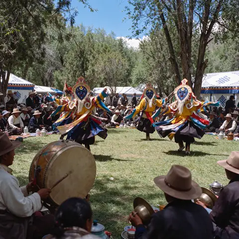
IV-8013 项子项目藏戏
西藏自治区 · 青海省 · 四川省 等 4 地
展开档案明细13 条
- 藏戏（拉萨觉木隆）西藏自治区2006 第一批 · 新增项目官方页 →
- 藏戏（日喀则迥巴）西藏自治区2006 第一批 · 新增项目官方页 →
- 藏戏（日喀则南木林湘巴）西藏自治区2006 第一批 · 新增项目官方页 →
- 藏戏（日喀则仁布江嘎尔）西藏自治区2006 第一批 · 新增项目官方页 →
- 藏戏（山南雅隆扎西雪巴）西藏自治区2006 第一批 · 新增项目官方页 →
- 藏戏（山南琼结卡卓扎西宾顿）西藏自治区2006 第一批 · 新增项目官方页 →
- 藏戏（黄南藏戏）青海省黄南藏族自治州2006 第一批 · 新增项目官方页 →
- 藏戏（德格格萨尔藏戏）四川省德格县2008 第二批 · 扩展项目官方页 →
- 藏戏（巴塘藏戏）四川省巴塘县2008 第二批 · 扩展项目官方页 →
- 藏戏（色达藏戏）四川省色达县2008 第二批 · 扩展项目官方页 →
- 藏戏（青海马背藏戏）青海省果洛藏族自治州2008 第二批 · 扩展项目官方页 →
- 藏戏（尼木塔荣藏戏）西藏自治区尼木县2011 第三批 · 扩展项目官方页 →
- 藏戏（南木特藏戏）甘肃省甘南藏族自治州2011 第三批 · 扩展项目官方页 →
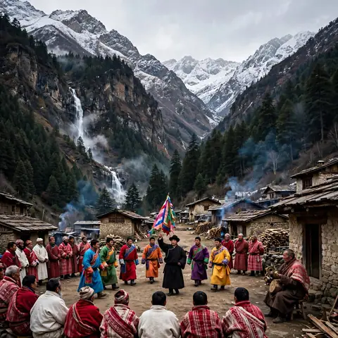
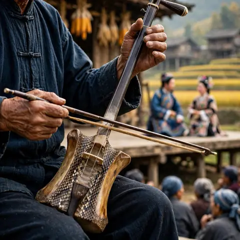
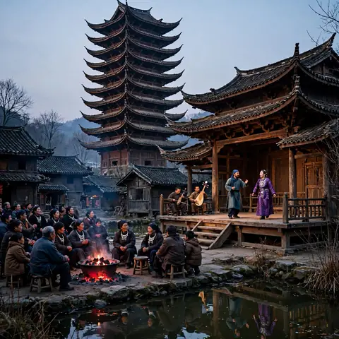
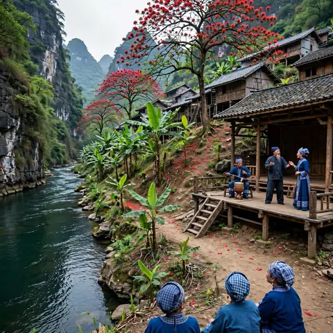
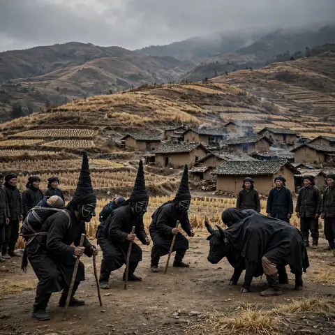
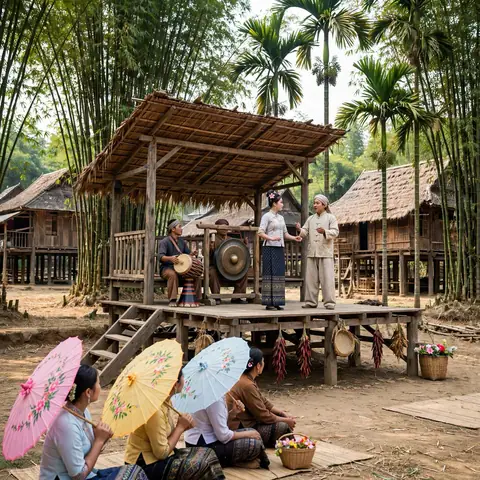
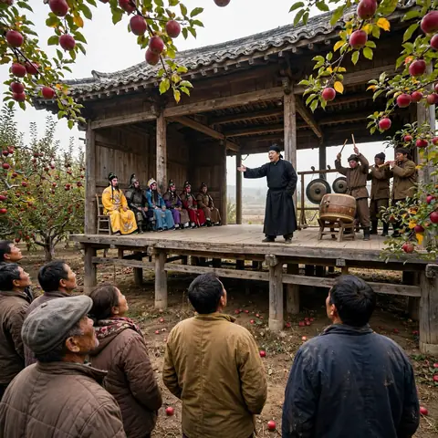
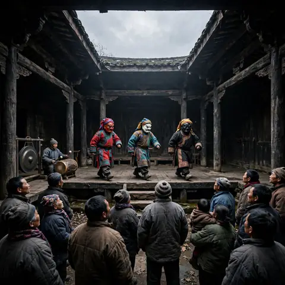
IV-8915 项子项目傩戏
河北省 · 安徽省 · 湖南省 等 7 地
展开档案明细15 条
- 傩戏（武安傩戏）河北省武安市2006 第一批 · 新增项目官方页 →
- 傩戏（池州傩戏）安徽省池州市2006 第一批 · 新增项目官方页 →
- 傩戏（侗族傩戏）湖南省新晃侗族自治县2006 第一批 · 新增项目官方页 →
- 傩戏（沅陵辰州傩戏）湖南省沅陵县2006 第一批 · 新增项目官方页 →
- 傩戏（德江傩堂戏）贵州省德江县2006 第一批 · 新增项目官方页 →
- 傩戏（万载开口傩）江西省万载县2008 第二批 · 扩展项目官方页 →
- 傩戏（仡佬族傩戏）贵州省道真仡佬族苗族自治县2008 第二批 · 扩展项目官方页 →
- 傩戏（鹤峰傩戏）湖北省鹤峰县2008 第二批 · 扩展项目官方页 →
- 傩戏（恩施傩戏）湖北省恩施市2008 第二批 · 扩展项目官方页 →
- 傩戏（任庄扇鼓傩戏）山西省曲沃县2011 第三批 · 扩展项目官方页 →
- 傩戏（德安潘公戏）江西省德安县2011 第三批 · 扩展项目官方页 →
- 傩戏（梅山傩戏）湖南省冷水江市2011 第三批 · 扩展项目官方页 →
- 傩戏（荔波布依族傩戏）贵州省荔波县2011 第三批 · 扩展项目官方页 →
- 傩戏（临武傩戏）湖南省临武县2014 第四批 · 扩展项目官方页 →
- 傩戏（庆坛）贵州省金沙县2014 第四批 · 扩展项目官方页 →
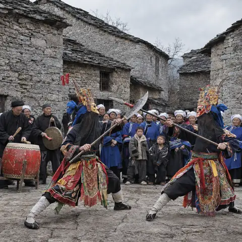
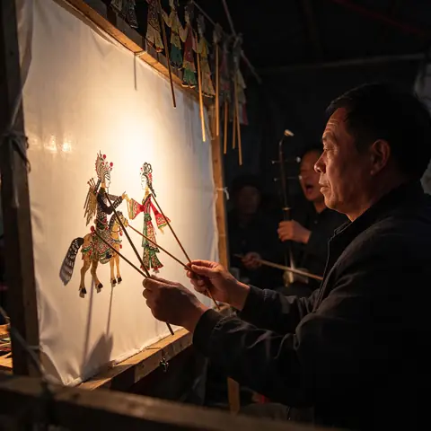
IV-9137 项子项目皮影戏
河北省 · 山西省 · 辽宁省 等 17 地
展开档案明细37 条
- 皮影戏（唐山皮影戏）河北省唐山市2006 第一批 · 新增项目官方页 →
- 皮影戏（冀南皮影戏）河北省邯郸市2006 第一批 · 新增项目官方页 →
- 皮影戏（孝义皮影戏）山西省孝义市2006 第一批 · 新增项目官方页 →
- 皮影戏（复州皮影戏）辽宁省瓦房店市2006 第一批 · 新增项目官方页 →
- 皮影戏（海宁皮影戏）浙江省海宁市2006 第一批 · 新增项目官方页 →
- 皮影戏（江汉平原皮影戏）湖北省潜江市2006 第一批 · 新增项目官方页 →
- 皮影戏（陆丰皮影戏）广东省汕尾市2006 第一批 · 新增项目官方页 →
- 皮影戏（华县皮影戏）陕西省渭南市2006 第一批 · 新增项目官方页 →
- 皮影戏（华阴老腔）陕西省华阴市2006 第一批 · 新增项目官方页 →
- 皮影戏（阿宫腔）陕西省富平县2006 第一批 · 新增项目官方页 →
- 皮影戏（弦板腔）陕西省乾县2006 第一批 · 新增项目官方页 →
- 皮影戏（环县道情皮影戏）甘肃省环县2006 第一批 · 新增项目官方页 →
- 皮影戏（凌源皮影戏）辽宁省凌源市2006 第一批 · 新增项目官方页 →
- 皮影戏（北京皮影戏）北京市宣武区2008 第二批 · 扩展项目官方页 →
- 皮影戏（河间皮影戏）河北省河间市2008 第二批 · 扩展项目官方页 →
- 皮影戏（岫岩皮影戏）辽宁省鞍山市2008 第二批 · 扩展项目官方页 →
- 皮影戏（盖州皮影戏）辽宁省盖州市2008 第二批 · 扩展项目官方页 →
- 皮影戏（望奎县皮影戏）黑龙江省望奎县2008 第二批 · 扩展项目官方页 →
- 皮影戏（泰山皮影戏）山东省泰安市2008 第二批 · 扩展项目官方页 →
- 皮影戏（济南皮影戏）山东省济南市2008 第二批 · 扩展项目官方页 →
- 皮影戏（定陶皮影）山东省定陶县2008 第二批 · 扩展项目官方页 →
- 皮影戏（罗山皮影戏）河南省罗山县2008 第二批 · 扩展项目官方页 →
- 皮影戏（湖南皮影戏）湖南省木偶皮影艺术剧院2008 第二批 · 扩展项目官方页 →
- 皮影戏（湖南皮影戏）湖南省衡山县2008 第二批 · 扩展项目官方页 →
- 皮影戏（四川皮影戏）四川省阆中市2008 第二批 · 扩展项目官方页 →
- 皮影戏（四川皮影戏）四川省南部县2008 第二批 · 扩展项目官方页 →
- 皮影戏（河湟皮影戏）青海省2008 第二批 · 扩展项目官方页 →
- 皮影戏（昌黎皮影戏）河北省昌黎县2011 第三批 · 扩展项目官方页 →
- 皮影戏（巴林左旗皮影戏）内蒙古自治区巴林左旗2011 第三批 · 扩展项目官方页 →
- 皮影戏（龙江皮影戏）黑龙江省哈尔滨市2011 第三批 · 扩展项目官方页 →
- 皮影戏（桐柏皮影戏）河南省桐柏县2011 第三批 · 扩展项目官方页 →
- 皮影戏（云梦皮影戏）湖北省云梦县2011 第三批 · 扩展项目官方页 →
- 皮影戏（腾冲皮影戏）云南省腾冲县2011 第三批 · 扩展项目官方页 →
- 皮影戏（乐亭皮影戏）河北省乐亭县2014 第四批 · 扩展项目官方页 →
- 皮影戏（通渭影子腔）甘肃省通渭县2014 第四批 · 扩展项目官方页 →
- 皮影戏（沙河皮影戏）河北省邢台市沙河市2021 第五批 · 扩展项目官方页 →
- 皮影戏（锦州皮影戏）辽宁省锦州市2021 第五批 · 扩展项目官方页 →
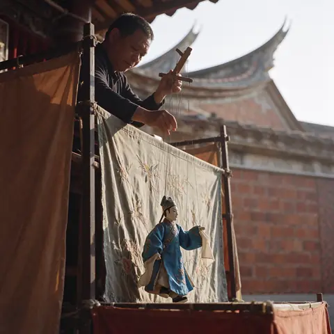
IV-9231 项子项目木偶戏
福建省 · 辽宁省 · 湖南省 等 13 地
展开档案明细31 条
- 木偶戏（泉州提线木偶戏）福建省泉州市2006 第一批 · 新增项目官方页 →
- 木偶戏（晋江布袋木偶戏）福建省晋江市2006 第一批 · 新增项目官方页 →
- 木偶戏（漳州布袋木偶戏）福建省漳州市2006 第一批 · 新增项目官方页 →
- 木偶戏（辽西木偶戏）辽宁省锦州市2006 第一批 · 新增项目官方页 →
- 木偶戏（邵阳布袋戏）湖南省邵阳县2006 第一批 · 新增项目官方页 →
- 木偶戏（高州木偶戏）广东省高州市2006 第一批 · 新增项目官方页 →
- 木偶戏（潮州铁枝木偶戏）广东省潮州市2006 第一批 · 新增项目官方页 →
- 木偶戏（临高人偶戏）海南省临高县2006 第一批 · 新增项目官方页 →
- 木偶戏（川北大木偶戏）四川省2006 第一批 · 新增项目官方页 →
- 木偶戏（石阡木偶戏）贵州省石阡县2006 第一批 · 新增项目官方页 →
- 木偶戏（郃阳提线木偶戏）陕西省2006 第一批 · 新增项目官方页 →
- 木偶戏（泰顺药发木偶戏）浙江省泰顺县2006 第一批 · 新增项目官方页 →
- 木偶戏（孝义木偶戏）山西省孝义市2008 第二批 · 扩展项目官方页 →
- 木偶戏（杖头木偶戏）江苏省扬州市2008 第二批 · 扩展项目官方页 →
- 木偶戏（平阳木偶戏）浙江省平阳县2008 第二批 · 扩展项目官方页 →
- 木偶戏（单档布袋戏）浙江省苍南县2008 第二批 · 扩展项目官方页 →
- 木偶戏（湖南杖头木偶戏）湖南省木偶皮影艺术剧院2008 第二批 · 扩展项目官方页 →
- 木偶戏（五华提线木偶）广东省梅州市2008 第二批 · 扩展项目官方页 →
- 木偶戏（文昌公仔戏）海南省文昌市2008 第二批 · 扩展项目官方页 →
- 木偶戏（三江公仔戏）海南省海口市2008 第二批 · 扩展项目官方页 →
- 木偶戏（海派木偶戏）上海木偶剧团2011 第三批 · 扩展项目官方页 →
- 木偶戏（杖头木偶戏）江苏省演艺集团2011 第三批 · 扩展项目官方页 →
- 木偶戏（泰顺提线木偶戏）浙江省泰顺县2011 第三批 · 扩展项目官方页 →
- 木偶戏（廿八都木偶戏）浙江省江山市2011 第三批 · 扩展项目官方页 →
- 木偶戏（广东木偶戏）广东省木偶艺术剧院有限公司2011 第三批 · 扩展项目官方页 →
- 木偶戏（揭阳铁枝木偶戏）广东省揭阳市2011 第三批 · 扩展项目官方页 →
- 木偶戏（中型杖头木偶戏）四川省资中县2014 第四批 · 扩展项目官方页 →
- 木偶戏（陕西杖头木偶戏）陕西省2014 第四批 · 扩展项目官方页 →
- 木偶戏（闽西客家木偶戏）福建省龙岩市2021 第五批 · 扩展项目官方页 →
- 木偶戏（武汉杖头木偶戏）湖北省武汉市2021 第五批 · 扩展项目官方页 →
- 木偶戏（湛江木偶戏）广东省湛江市赤坎区2021 第五批 · 扩展项目官方页 →
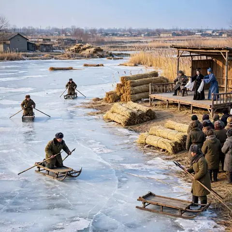
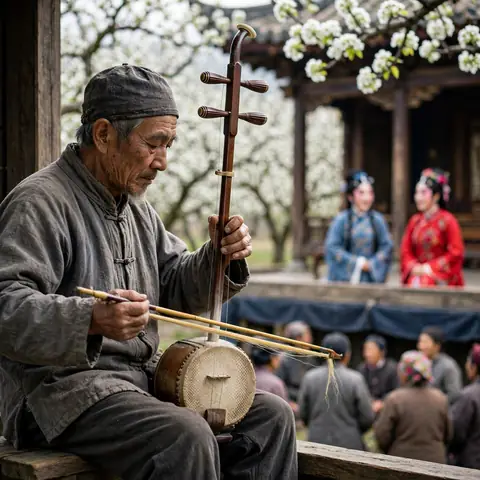
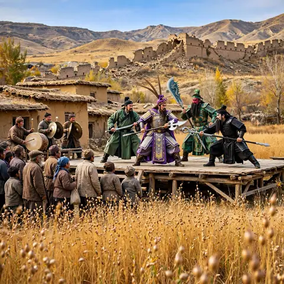
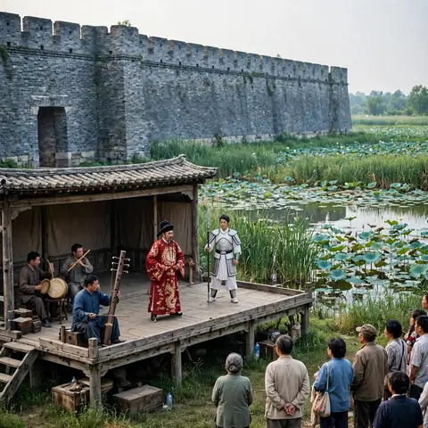
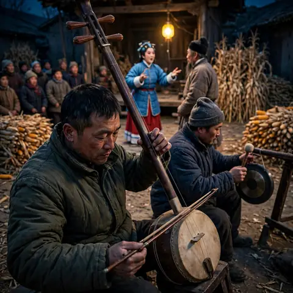
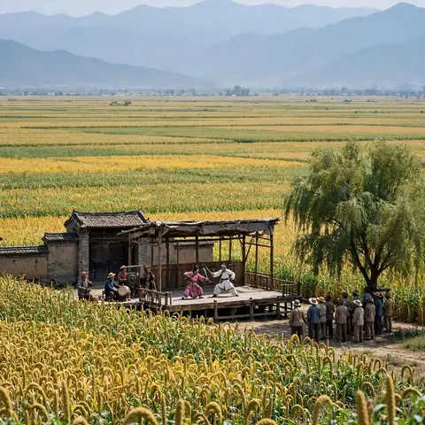
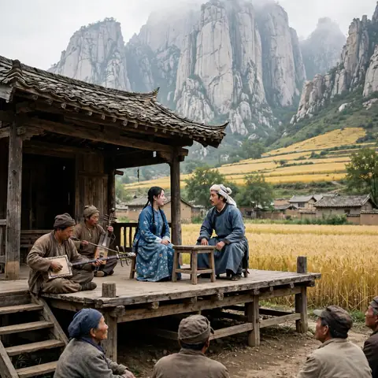
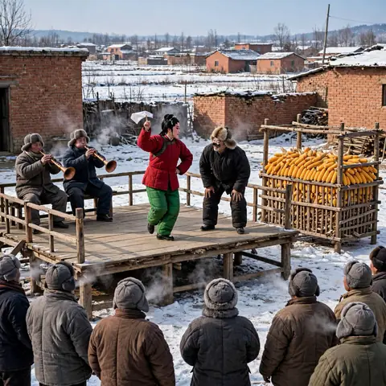
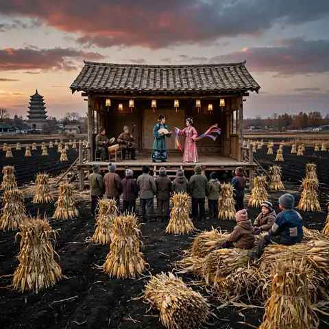
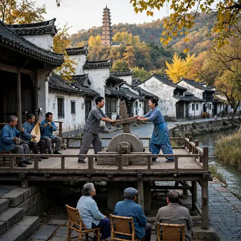
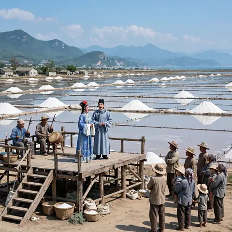
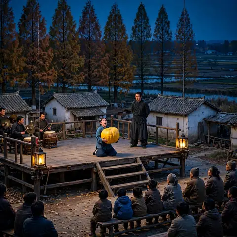
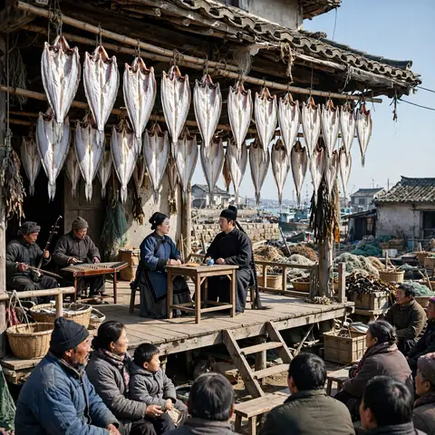
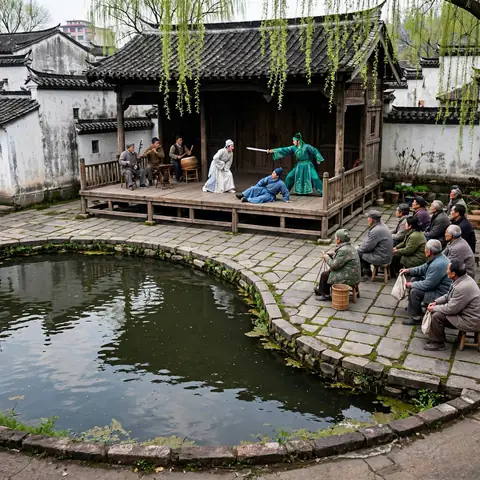
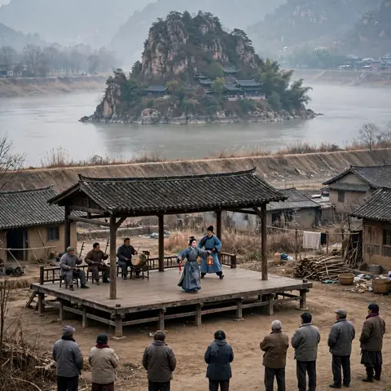
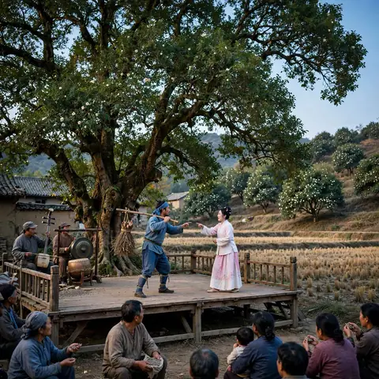
IV-11214 项子项目花鼓戏
安徽省 · 湖北省 · 湖南省 等 4 地
展开档案明细14 条
- 安徽省宿州市2008 第二批 · 新增项目官方页 →
- 安徽省淮北市2008 第二批 · 新增项目官方页 →
- 安徽省宣城市2008 第二批 · 新增项目官方页 →
- 湖北省随州市2008 第二批 · 新增项目官方页 →
- 湖北省麻城市2008 第二批 · 新增项目官方页 →
- 湖南省岳阳县2008 第二批 · 新增项目官方页 →
- 湖南省邵阳市2008 第二批 · 新增项目官方页 →
- 湖南省常德市2008 第二批 · 新增项目官方页 →
- 花鼓戏（荆州花鼓戏）湖北省仙桃市2011 第三批 · 扩展项目官方页 →
- 花鼓戏（襄阳花鼓戏）湖北省襄阳市2011 第三批 · 扩展项目官方页 →
- 花鼓戏（衡州花鼓戏）湖南省衡阳市2011 第三批 · 扩展项目官方页 →
- 花鼓戏（临湘花鼓戏）湖南省临湘市2011 第三批 · 扩展项目官方页 →
- 花鼓戏（长沙花鼓戏）湖南省花鼓戏剧院2011 第三批 · 扩展项目官方页 →
- 花鼓戏（光山花鼓戏）河南省光山县2014 第四批 · 扩展项目官方页 →
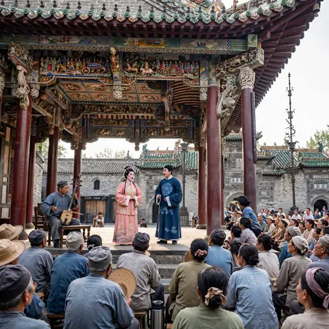
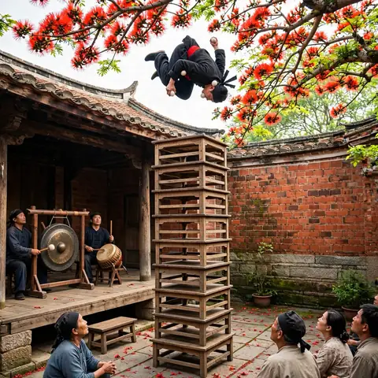
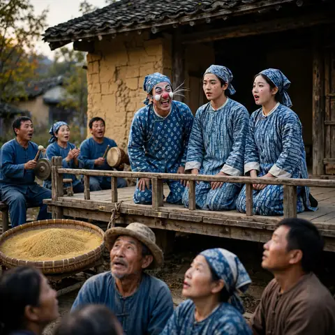
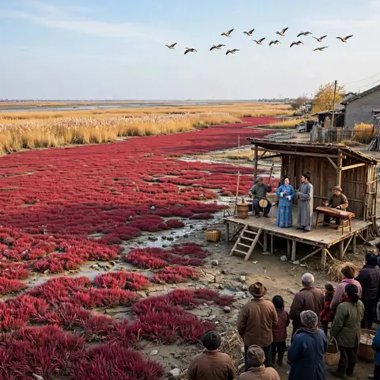
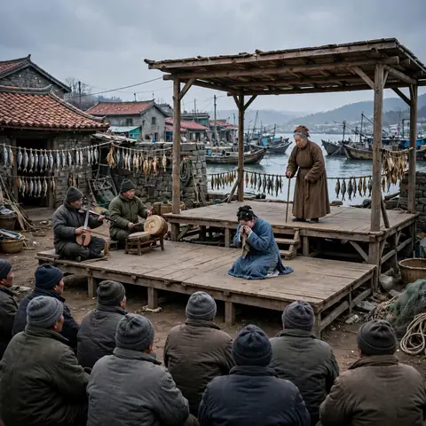
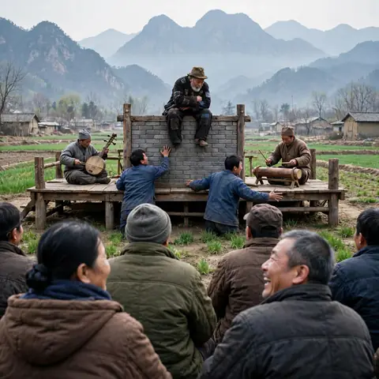
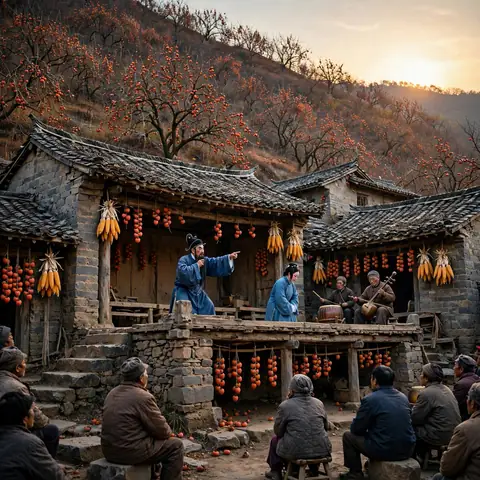
名录数据来源：中国非物质文化遗产网